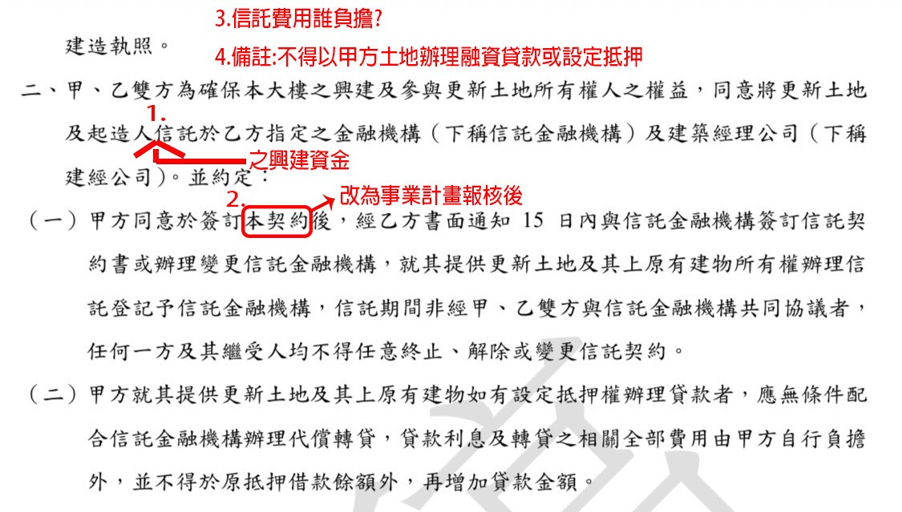
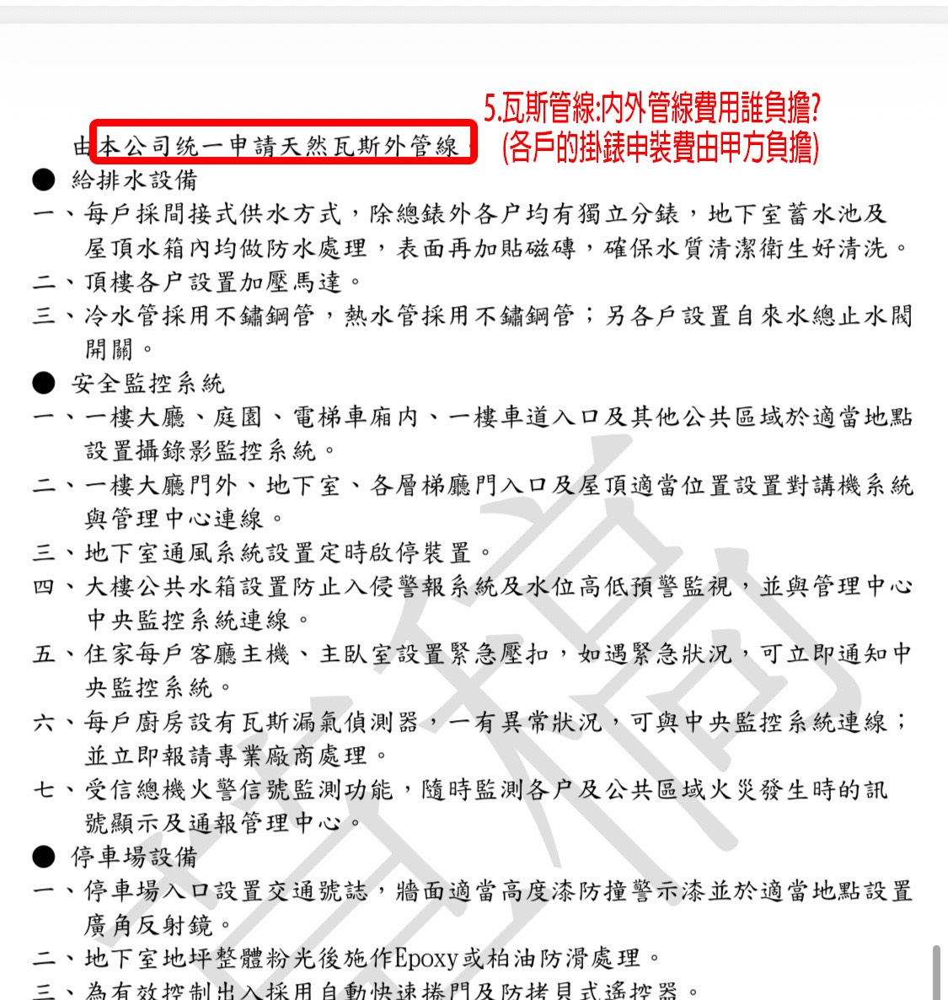
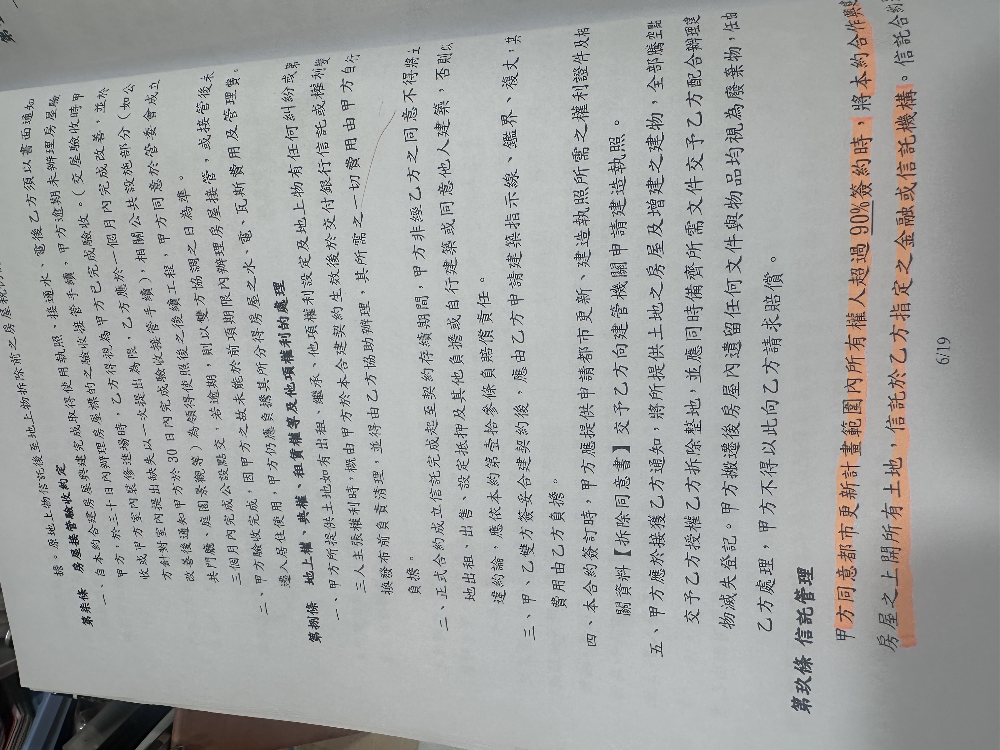

30 秒看懂
- 大方向一致：8 戶都傾向跟偉鉅合作。顧問與多數住戶的看法是：本棟位在巷內、基地不大，「沒有資格選建商」；偉鉅已經買進成為地主，這次錯過可能要再等 20–30 年。
- 合約的共識重點是「信託」。許太太對照新北市都更處的範本逐條檢查，提出信託標的漏寫「資金」、信託時點太早、不得拿地主土地去貸款、瓦斯內外管費用誰付等修改。電動車充電、廚餘空間等設備細項，多數人認為是次要。
- 唯一卡關的是 2號3樓毛先生的房客。毛先生本人不反對，但房客是他的好友，花了 270 萬整修、簽了 20 年公證租約、月租只收 1 萬。毛先生堅持要房客同意，而且明說不怕強拆，所以只能靠溝通。
- 會後分兩路進行：許太太整理條文，先貼住戶群組確認再交給建商；楊先生、孫先生與毛先生一起去找房客談。更新 條文問題已整理成 5 項送偉鉅，等待老闆回覆。
- 書面資料的新發現：契約原文確認信託標的只寫「起造人」、簽約後 15 日內就要信託。前一間建商的合約則是所有權人超過 90% 簽約才信託，可以作為要求延後的前例。前一間合約也寫明土地上的出租問題由地主自行清理、費用自負，這直接關係到毛先生的房客。
會議進程（依錄音時間）
點色塊可從該段開始播放| 時間 | 段落 | 主要發言者 |
|---|
住戶配置
門牌與樓層來自會中點名與逐戶發言順序。劉先生兩度自稱「4號2樓」。
地主
| 戶別 | 人物 | 身分與背景 | 立場 | 辨識依據 |
|---|---|---|---|---|
| 4號2樓 | 劉先生（召集人）、劉太太 | 從小住在這裡，建物還沒蓋好時母親就買下（預售）。現在與太太住台北，這戶出租，月租 4 萬多。自費請了三位顧問。 | 積極推動。主張「戰略重於戰術」、跟建商合作雙贏。曾提議個人出 200 萬幫毛先生解決房客問題。 | 自我介紹兩次 |
| 2號1樓 | 楊先生（楊老闆） | 約 13:29 才到場。被劉先生稱為「比較有經驗」。 | 支持。主導勸說毛先生、提出分頭進行與財產權復原機制。 | 逐戶發言時被點名「楊老闆發言完」；之後有人說「附和楊先生的想法」 |
| 2號2樓 | 孫先生、孫太太 | 加入群組不到一週就表態要都更。會後有人說「剛好買了，福氣」，推定是近年新買的屋主。 | 支持；「他的問題是道義問題，解決就 OK」。曾請教宏國建設的趙經理。 | 點名「孫老闆 2號2樓」；劉先生收尾特別致謝 會場主人為推定 |
| 2號3樓 | 毛先生（78 歲）、女兒（毛小姐）、女婿 | 房子由老姨丈、老姨婆（林公公、林婆婆）贈與或傳下 推定。自稱「Google 我的名字就知道」，曾臥軌、癱瘓高速公路、能帶群眾。 | 不反對都更，但房客必須同意。詳見「毛先生與房客」分頁。 | 多人直接稱呼；自述 78 歲 |
| 2號4樓 | 許太太、許先生 | 許太太是室內設計師，自行研讀新北市都更處的範本。許先生說新房子價值提高兩三倍。 | 支持；負責彙整合約修改意見。 | 劉先生問「您是許太太嘛」；「2號4樓，許先生講」 |
| 4號1樓 | 姓名未提及 | 自住，沒有要轉賣。 | 支持；「信託那個部分比較重要，其他大家一樣就好」。 | 點名「4號1樓」 |
| 4號4樓 | 姓名未提及 | 頂樓住戶，抱怨女兒牆快垮、頂樓陽台滲水、維修受不了。 | 支持；附和楊先生「細節是後話，信託最重要」。 | 點名時有人說「4號4樓是我」 推定，也可能是 4號3樓家人 |
| 4號3樓 | 錄音者家 | 裝修好後被樓上漏水弄壞。會後說「他們（毛先生）分 70 坪，我們才分 50 坪」。 | 會中未見正式表態；會後語氣正面（「阿嬤要賺大錢了」）。 | 你方確認 |
外部人物
| 人物 | 角色 | 重點 |
|---|---|---|
| 黃小姐 | 劉先生請的顧問（免費，私人交情） | 建築業界資深，劉先生介紹「知名建商高層沒有人不認識她」、是「黃永宏大師最得意的副手」 推定指建築師黃永洪。三年前也來過。只待一小時，約 56 分時先離席。 |
| 張董 | 劉先生請的顧問 | 劉先生 40 多年的老同學，「對我們夫妻有恩」；熟悉新北房地產，已退休，每月仍管理近百間套房。兩三年前也來過。 |
| 蔡經理 | 劉先生請的審約顧問（推定未到場） | 專做都更，公司兩年前開始接都更案；帶著師傅逐條審查契約。全名錄音聽作「蔡英麟」或「蔡元潔」 待確認。結論是「沒有重大需要改，但有些小部分」。 |
| 蔡經理的師傅 | 都更從業者 | 「我們這個基地的條件沒有資格選建商」，因為位置很裡面、基地又不大。 |
| 林專員 | 偉鉅窗口 | 回覆劉先生：契約「不太可能改」，因為一向都拿這一份去簽；除非有重大爭議、影響權益。 |
| 「朱朱」 人名不確定 | 推定為偉鉅方人員 | 曾說可以用「備註」或「附屬」方式補充。 |
| 宏國建設 趙經理 | 孫先生請教的顧問 | 意見與黃小姐「一模一樣」：偉鉅已經買下的情況下，不跟他合作以後就沒機會了。 |
| 房客（毛先生的好友） | 2號3樓承租人 | 中研院研究員；錄音中出現「Terry」與「吳小姐」兩個稱呼 推定為房客本人或同住者。 |
| 林公公、林婆婆 | 毛先生的老姨丈、老姨婆 | 房子原本的主人 推定；從小看劉先生長大。 |
| 林小姐／陳小姐 姓氏不確定 | 鄰近獨棟屋主 | 正在自行改建，為了讓母親在世時看到新房子；本身也是做建築的。黃小姐認為「最笨」，應該拆掉合進來。 |
說明：錄音由手機在現場錄製，多人同時說話。講者身分是先用聲紋分群，再依稱呼、自我介紹、點名順序與發言內容人工判定；同一聲紋群組常混到不同人，所以本報告以內容判定為準。
合約修改意見
會中主要由許太太提出（29:33–37:50）。她拿偉鉅契約對照新北市都更處律師演講用的參考範本，範本把該注意的地方用紅字標出，她也已經把範本貼在住戶群組。會後已把其中 5 項標在契約截圖上（下表「書面提問」欄），請林先生轉問偉鉅老闆。
| # | 議題 | 契約原文（截圖）或錄音轉述 | 建議修改 | 書面提問 | 錄音 | 狀態 |
|---|---|---|---|---|---|---|
| 1 | 信託標的漏寫「資金」 第二項（錄音說在第 6 頁） | 原文：「甲、乙雙方為確保本大樓之興建及參與更新土地所有權人之權益，同意將更新土地及起造人信託於乙方指定之金融機構（下稱信託金融機構）及建築經理公司（下稱建經公司）。」 | 在「起造人」後插入「之興建資金」，土地與建商資金一起信託。範本寫法：「甲方不動產及乙方資金交由信託專戶」 | 問題 1 | 原文已確認 已送偉鉅 | |
| 2 | 信託時點太早 第二項第（一）款 | 原文：「甲方同意於簽訂本契約後，經乙方書面通知 15 日內與信託金融機構簽訂信託契約書或辦理變更信託金融機構，就其提供更新土地及其上原有建物所有權辦理信託登記予信託金融機構，信託期間非經甲、乙雙方與信託金融機構共同協議者，任何一方及其繼受人均不得任意終止、解除或變更信託契約。」 | 書面提問寫「本契約」改為「事業計畫報核後」。錄音中許太太說的是「事業計畫核定後」，兩者時點不同（報核是送件，核定是核准）。前一間建商合約的寫法是「所有權人超過 90% 簽約時」 | 問題 2 | 原文已確認 已送偉鉅 | |
| 3 | 信託費用 | 截圖段落未寫信託費用由誰負擔 | 由乙方（偉鉅）負擔 | 問題 3「信託費用誰負擔？」 | 已送偉鉅 | |
| 4 | 不得拿地主土地融資或設定抵押 | 截圖段落未見此限制 | 附註寫明：不得以甲方土地辦理融資貸款或設定抵押 | 問題 4（備註） | 已送偉鉅 | |
| 5 | 天然瓦斯內外管費用 建材設備表（錄音說在第 29 頁） | 原文：「由本公司統一申請天然瓦斯外管線。」沒寫費用由誰付 | 內外管線費用由乙方負擔；各戶掛錶申裝費由甲方（住戶）負擔 | 問題 5 | 原文已確認 已送偉鉅 | |
| 6 | 既有房貸要代償轉貸 新發現 第二項第（二）款 | 原文：「甲方就其提供更新土地及其上原有建物如有設定抵押權辦理貸款者，應無條件配合信託金融機構辦理代償轉貸，貸款利息及轉貸之相關全部費用由甲方自行負擔外，並不得於原抵押借款餘額外，再增加貸款金額。」 | 會中沒有討論。有房貸的戶要知道：信託時房貸會轉到信託銀行，利息和轉貸費用自付，而且不能增貸 | 未列入 | — | 原文已確認 |
| 7 | 契約期限 | 錄音聽作「360 日內，等於說三年內，如果他沒談成就解約」 | 許太太認為有期限是合理的；期限內沒達到八成，到時候再看要續約或重談 | 未列入 | 360 日或 36 個月待比對 | |
| 8 | 停車場預留電動車充電設備 | 截圖中停車場設備可見：交通號誌、防撞警示漆、廣角反射鏡、地坪 Epoxy 或柏油防滑、自動快速捲門與防拷貝遙控器，未見充電設備（清單後段未入鏡） | 用「增修」方式加入（三年前那份合約討論過，劉先生已轉傳群組） | 未列入 | 多數認為次要 | |
| 9 | 垃圾收集處設廚餘空間 | 錄音：沒有規劃 | 同上。黃小姐：法規沒要求，就算現在的大樓也多半不做，日後管委會再找地方即可 | 未列入 | 多數認為次要 | |
| 10 | 案子中止時產權如何復原 | 錄音：未見相關條款 | 萬一因故無法繼續，地主的產權要能回復，需有救濟或補充條款 | 未列入 | 待書面比對 |
另一個錄音中沒提到的細節：信託對象除了「乙方指定之金融機構」，還包括「建築經理公司」（建經公司），也就是由建經公司參與管理興建資金與進度。是哪一家建經公司 待書面比對。
對照：前一間建商的合約
取自前一間簽約建商的合約第 6／19 頁（推定即會前閒談提到「之前簽約的那一家」）。偉鉅契約對應條文大多不在這次的截圖裡，所以下表「偉鉅契約」欄有幾格只能標待比對。
| 議題 | 偉鉅契約 | 前一間合約 | 對我們的意義 |
|---|---|---|---|
| 土地何時信託 | 簽約後，經乙方書面通知 15 日內 | 第玖條：「甲方同意都市更新計畫範圍內所有權人超過 90% 簽約時，將本約合作興建房屋之上開所有土地，信託於乙方指定之金融或信託機構。」 | 前一間要等整個更新範圍超過九成簽約才信託，比偉鉅版本晚很多，也比住戶提案的「事業計畫報核後」更明確。可作為要求延後信託的前例 |
| 出租等權利由誰清理 | 截圖未涵蓋 待比對 | 第捌條一：土地如有出租、繼承、他項權利設定、地上物糾紛或第三人主張權利，「概由甲方於本合建契約生效後於交付銀行信託或權利變換發布前負責清理，並得由乙方協助辦理，其所需之一切費用由甲方自行負擔」 | 直接關係毛先生：若偉鉅契約有同樣條款，清理 20 年租約的責任和費用都在毛先生身上，而且要在信託前完成 |
| 信託後能不能出租、出售 | 截圖未涵蓋 待比對 | 第捌條二：「正式合約成立信託完成起至契約存續期間，甲方非經乙方之同意不得將土地出租、出售、設定抵押及其他負擔或自行建築或同意他人建築，否則以違約論」，依第壹拾參條賠償 | 信託後地主自行出租、出售都要建商同意。若偉鉅也這樣寫，大家提的「改建後繼續租給房客」需要先跟偉鉅確認 |
| 測量費用 | 截圖未涵蓋 待比對 | 第捌條三：建築指示線、鑑界、複丈由乙方申請，費用由乙方負擔 | 可作為對照 |
| 拆除與點交 | 截圖未涵蓋 待比對 | 第捌條四、五：簽約時提供權利證件與【拆除同意書】；接獲通知後把房屋與增建全部騰空點交，屋內遺留物視為廢棄物，不得請求賠償 | 增建（例如頂加）也要一起騰空；搬遷前要把東西清乾淨 |
| 交屋驗收 | 截圖未涵蓋 待比對 | 第柒條：取得使照、接通水電後書面通知，30 日內驗收；缺失以一次提出為限，乙方一個月內改善；公設於管委會成立後 3 個月內點交；驗收後就算沒遷入，水電瓦斯與管理費仍由甲方負擔 | 可作為對照 |
整理者備註：前一間合約第捌條一提到「交付銀行信託或權利變換發布前」，代表那份合約考慮過走權利變換。這和黃小姐描述的「三家估價、等價對接」機制一致；偉鉅這份走哪一種方式 待書面比對。
書面資料原圖

S__62627867_0.jpg

S__62627868_0.jpg

DF3BD67A-…0136.jpg
點圖片可開啟原圖。圖片需與這份 HTML 放在同一個資料夾才看得到。
許太太的實例：瓦斯管費十幾萬
她做室內設計時遇過預售屋交屋，建商要買方付瓦斯管費十幾萬；後來查才知道是當初合約沒寫誰付。她強調「不是找他們麻煩」，只是寫清楚避免以後糾紛。
許家親戚的實例：沒信託損失一千多萬
去年有親戚的合建案沒做信託，建商一直拿去貸款；親戚後來想把房子和權利要回來，損失一千多萬才拿回，透天也沒蓋成。這是大家把「信託」列為第一優先的直接原因。
誰支持哪一項
依錄音中明確表態整理；空白代表沒有表態。滑過格子可看時間。
要不要爭取改約：兩種看法
挑重點、用增修補充
- 劉先生：打仗靠戰略不靠戰術；建商也是地主，條文對他有利也等於對地主有利；把三年前討論過的設備用增修加上，對方較可能同意。
- 林專員（轉述）：除非有重大爭議、影響權益，否則不太可能改，因為大家簽的是同一份。
- 「朱朱」（轉述）：可以用備註或附屬方式處理。
- 楊先生：前面超過一半的住戶已經簽同一版本，我們再加條件就變成條件不同；要提，就從「這樣能幫你賣更好的價格」的角度說。
合約不必糾結，看對價與時程
- 黃小姐：每個案子的合約都很自私，改不改對最後成果差異不大；建商是服務業，之後還是會討論；大家該在意的是自己房子換到的對價。
- 黃小姐：垃圾、停車等法令都有規定，合法才蓋得出來；真正影響大的是同意比例與審議時間。
- 4號1樓：建商自己也要賣，設備不會做太差；合約可以就可以，大家一樣就好。
結論：信託相關條文（上表 1–4）是全體共識，交由許太太整理；設備類（8、9）劉先生交給許太太決定要不要加。會後送出的 5 項提問正是信託四項加瓦斯管；期限、設備與產權復原這次沒有列入。
2號3樓：唯一待溝通的一戶
毛先生本人不反對都更，也說希望圓滿解決。卡住的是他對房客的承諾：房客是他「非常要好的朋友」，自費整修、簽了長約，他認為道義上必須由房客自己同意，「不是我來做決定」。
毛先生的說法
- 房子是老姨丈、老姨婆（林公公、林婆婆）留給他的，馬上賣掉對不起他們，所以不賣；提到「贈與就有 70 萬」 推定指贈與相關稅費。
- 房子超過 50 年，好友想租，他要求一定要整修；好友要求租約長一點，最後花了 270 萬，他就讓對方自己開價，對方開 1 萬。他還交代不要跟鄰居講，免得破壞行情。
- 簽 20 年並找律師公證，是怕自己走了、子女不認帳。租約到哪一年他記不得，要看合約。
- 錢對他沒有意義，「增加多少財富是虛無的」；在乎的是「老毛這個人還不錯」的名聲。
- 他說房子「非常非常堅固」，裝修師傅看過這麼多老房子都這樣說。
- 強調自己是社運出身，不怕強拆：「80% 同意你就可以拆掉？沒有人敢拆我的」。
- 帶女兒、女婿來聽，因為自己「完全沒進入狀況」。子女都有自己的房子。
大家提出的解方
| 提議 | 誰 | 毛先生反應 |
|---|---|---|
| 鄰居湊錢或劉先生個人出 200 萬，把裝修費還給房客 | 劉先生 | 拒絕：「不是用那個錢」，要對方同意 |
| 現在更新案很多，房客應能體諒 | 黃小姐 | 「你講可以體諒」不算數 |
| 新房子價值高，就算坪數少 20% 也賺；案子成了就有籌碼和資源處理 270 萬 | 楊先生 | 錢對他沒意義 |
| 建商有房租補助；改建後繼續租給他，等於守住承諾 | 楊先生 | 「這個當然要租他」 |
| 分回 72 坪可選兩三間（有規劃小坪數、中坪數），留一間給房客 | 黃小姐 | 房子不能賣 |
| 八戶裡有位大哥附近有房子，可讓房客就近過渡 2–5 年 | 楊先生 推定 | 未明確回應 |
| 用建商補助加差額補貼，讓房客過渡期租更舒適的房子 | 會後轉述 | — |
房客租約與都更時程重疊
以 2026 年為起點。租約剩約 10 年來自會後閒聊；拆除與完工時間取自黃小姐「最快四五年才會拆，完工大概八九年、十年以後」。淺色段是區間的不確定部分。
整理者備註：依這兩個說法，房客租約剩下的時間幾乎涵蓋整段拆除到完工，所以「改建後繼續租給他」加上過渡期安置，是能同時守住毛先生承諾的方向。租約起訖日以公證租約為準 待書面比對。
書面資料帶來的新考量 會後更新
前一間建商的合約有兩條跟房客問題直接相關（偉鉅契約是否相同，截圖沒有涵蓋 待比對）：
- 第捌條一：土地上的出租等權利，由地主在交付信託前負責清理，費用自負，建商可以協助。照這個寫法，房客的 20 年租約要由毛先生在信託前處理好，處理費用也算他的。
- 第捌條二：信託完成後到契約結束前，地主出租、出售都要建商同意。大家提的「改建後繼續租給他」，需要先確認偉鉅契約是否有同樣限制，以及這個限制到交屋後是否還有效。
- 偉鉅原文是簽約後 15 日內就要信託。如果偉鉅也有類似的清理條款，信託時點又沒改，毛先生一簽約就會碰到租約清理的時間壓力；改成報核後或九成簽約後才信託，可以多出溝通時間。
會議上的決定
- 毛先生上次給大家「兩個禮拜」等他確認。
- 毛先生同意先把今天的情況告訴房客，劉先生建議他和楊先生一起去。
- 楊先生、孫先生抽空跟房客談；有人表示「今天晚上就跟他聯絡」，說住戶代表想好好跟他談，「他還欠我一杯咖啡」。
- 劉先生：「我現在發現他（房客）才是整個都更案能不能成最關鍵的」。
逐戶發言（依會中順序）
劉先生從 2號1樓開始請每戶表達意見，中間黃小姐先離席。
楊先生
- 許太太注意到法律細節「很棒」。他擔心的是萬一案子做不下去，地主產權能不能復原，要有救濟或補充方式。
- 電動車位、廚餘可以想，但前面超過一半住戶已簽同一版本，再提會變成條件不同；要提就從「增加這些能幫你賣更好價格」去說。
- 太細的建材要求對促成案子不一定有幫助。
頂樓住戶
- 附和楊先生：這些都是小細節，大方向是把案子談成。
- 信託才是對大家很重要的部分。充電樁她也發現契約裡沒有，但那是後話，現在不需要糾結。
孫先生
- 沒有意見。毛先生的問題很容易解決，只要道義問題處理好就 OK。
毛先生
- 沒有問題。只問了一件事：「這條巷子怎麼辦？」
- 回覆：巷子會改到基地最旁邊，巷子還在，只是位置移動（廢巷再改道） 待規劃圖確認。
許先生（許太太已先發言）
- 房子很舊，盡量配合大家換新房，價值提高兩三倍。
- 有人接話：孫先生那邊「不只兩三倍，大概到四倍」 推定指孫先生購入價與新屋價值的比。
- 信託很重要，弄不好地被拿去抵押，最貴的就是這塊地；接著舉了親戚沒信託損失一千多萬的例子。
自住戶
- 自己住，不會轉賣，沒什麼意見。建商自己也要賣，設備不會做太差。信託比較重要，其他大家一樣就好。
劉先生
- 「我是 4號2樓，我就跳過」（前面已發言過）。
老屋現況
- 頂樓女兒牆整圈包了不鏽鋼，不包就快垮；頂樓陽台很容易滲水。
- 許太太：結構真的不好，「我自己做裝修的，我們四樓也花了好幾百萬」。
- 請人上過屋頂修一次，女兒牆很矮，用力推好像會動；台灣地震又多。
- 地板滲水會一路往下滲到樓下天花板；4號3樓（我們）剛裝修好就被樓上漏水弄壞。
基地條件
- 位置好，但在很小的巷子裡面；沒有面前道路，自己做危老會很辛苦。
- 師傅的說法：位置很裡面、基地不大，「沒有資格選建商」。
- 本棟 8 戶在整個建地裡不到 50%；前面超過一半的住戶已經跟偉鉅簽了同一版本 待書面比對。
- 偉鉅已經買進、成為地主，有話語權，比較容易整合；孫先生轉述偉鉅上次的說法：要把「前面那一塊」解決並跟本棟合起來才有利潤。
- 現有巷子會改到基地最旁邊。鄰近一棟獨棟正在自行改建。
過去經過
- 劉先生印象中，這一帶的整合大概有 5 次，都沒成功。
- 三年前有一次：黃小姐、張董當時也來過；那份合約討論過電動車充電、廚餘空間等設備，劉先生這次把內容轉傳給大家。
- 會前閒談提到「之前簽約的那一家」的分回條件 錄音不清。前一間建商合約的第 6／19 頁已取得，要到所有權人超過 90% 簽約才信託，見「合約條文」分頁。
- 偉鉅之前來說明過一次，當時有住戶沒到。
同意門檻：張董與黃小姐的論點
張董：都更不需要百分之百同意，「至少要八成以上才過，已經比修憲門檻還要高很多」。黃小姐：法律上不需要 100%，但有沒有 100% 同意，進都更委員會審查的時間完全是兩回事；公務員不願意強制拆別人的家，所以實際通過的幾乎都是 100%。
| 項目 | 比例 | 說明 |
|---|
整理者備註：「八成」推定對應都市更新條例第 37 條「自行劃定更新單元」的事業計畫門檻（私有土地與合法建物所有權人數、面積均超過 4/5）；本案適用哪一種程序 待書面比對。楊先生說的「7 戶已超過 80%」只算本棟 8 戶，法定比例要以整個更新單元計算。修憲門檻 56.25% 是立委 3/4 出席乘以出席 3/4 同意的換算，僅供對照張董的說法。
審議時程
- 就算只有一戶不同意，超過八成也能送事業計畫，最後會走強制；但最快也要四五年才會拆，完工大概八九年、十年以後。
- 台北市有「168」：100% 同意的案子要求 16 個月完成審議。
- 新北市比較有魄力，比較敢拆；但毛先生表示「沒有人敢拆我的」。
價值與分配
- 房子變成一個數字、新房子也是一個數字，等價對接；由三家不同的估價公司進來估，是公平機制。
- 張董估本案潛在利益有「幾千萬」。會後閒聊說「我們這幾家有五六千萬的東西」。
- 許先生：價值提高兩三倍；孫先生那邊推定到四倍。
- 更新後除了增值，稅率也會差很多。
整理者備註：黃小姐描述的「三家估價、等價對接」是權利變換的做法，而本案是合建契約；分配究竟依契約約定還是權變估價 待書面比對。
錄音中出現的分回坪數
三個數字的講者與脈絡都不完整，只能當作線索，實際分回條件以契約為準 待書面比對。
| 對象 | 坪數 | 出處 | 可信度 |
|---|
兩邊差距的原因（原有面積、土地持分或其他條件）錄音中沒有說明。
顧問觀點
黃小姐
17:41–19:30、26:55–29:33，以及勸說段- 先恭喜大家：偉鉅已經是地主，加上現在時機成熟，「有些人已經坐不住，主動找人來幫他都更」。
- 接下來會面臨談條件和選屋，這些機制都很成熟。
- 更新施行快 20 年，約定都綁很死，要騙人用更新太辛苦，門檻很高。
- 三年前她就說過：不跟就得自己花錢找設計師、一家一家拜託人；目前最好的位置就是這次。
- 老房子的問題是結構，不是錢；裡面裝修了，結構不穩還是問題。
- 社會上反對更新的人會被說不道德，現在比較容易說服。
- 開車去接她的路上她說：隔壁獨棟自己蓋「最笨」，應該拆掉合進來（劉先生轉述）。
張董
19:36–23:15- 兩三年前也來過，但沒成。以投資經驗看，這次成功機會很大。
- 「一案都更，勝過三十年流血流汗」。
- 有風險，但利潤大，估潛在利益幾千萬；他很羨慕大家，自己手上的物件沒有建商來談過。
- 建商一再來敲門，代表位置有特殊性；缺點是巷子小。錯過要等 20–30 年，到時有些人已經不在。
- 不花一毛錢換大間；也可以變現再投資，「買法拉利都買得起」。
- 被騙的可能不能排除，但很小，是值得承受的小風險。
會議分工
| 工作 | 負責 | 做法 | 時間 |
|---|---|---|---|
| 整理合約修改條文 已送出 | 許太太（許先生協助） | 把修改意見寫具體，先貼住戶群組讓大家確認，再貼到與建商的群組，請業務轉告老闆；劉先生建議請林專員直接跟許太太談。會後進度：已整理成 5 項標在契約截圖上，請林先生轉問偉鉅老闆，等待回覆 | |
| 與毛先生的房客溝通 | 毛先生、楊先生、孫先生 | 毛先生先說明今天情況；楊先生、孫先生抽空一起談；有人表示當晚就聯絡 | |
| 兩件事同時進行 | 全體 | 對建商說「7 戶同意、1 戶溝通中」，不用等毛先生；劉先生補充要強調毛先生並未反對 | |
| 顧問謝禮 | 劉先生 | 有人提「免費的最貴」，談成後每戶出錢請顧問；劉先生說他私下處理，已準備一件從中國大陸藝術家買的藝術品送黃小姐 |
契約比對進度
原文已確認（契約截圖）
- 確認 信託條文只寫「更新土地及起造人信託」，沒有「資金」；信託對象另含建經公司。
- 確認 信託時點：簽約後經乙方書面通知 15 日內。
- 確認 瓦斯只寫「由本公司統一申請天然瓦斯外管線」，沒寫費用。
- 確認 既有房貸須配合信託銀行代償轉貸，費用自付、不得增貸（會中未討論）。
已送偉鉅，等老闆回覆
- 「起造人」後插入「之興建資金」。
- 信託時點改為「事業計畫報核後」。
- 信託費用誰負擔。
- 備註：不得以甲方土地辦理融資貸款或設定抵押。
- 瓦斯內外管線費用誰負擔（掛錶申裝費由住戶負擔）。
仍需翻契約比對
- 契約期限：錄音聽到「360 日」，講者又說「等於三年」，確認實際寫法與未達八成時的處理。
- 出租等權利由誰清理、費用誰付（前一間合約第捌條一：地主自負）。
- 信託後出租、出售是否要建商同意（前一間合約第捌條二），以及限制到哪個時間點為止。
- 停車場充電設備、垃圾收集處與廚餘空間（設備表後段未入鏡）。
- 各戶分回坪數與計算依據（2號3樓約 70–72 坪、4號3樓約 50 坪的差異原因）。
- 案子中止或解約時，土地與產權如何返還。
- 拆遷期間的房租補助（楊先生提到建商有補助款）金額與期間。
- 建經公司是哪一家；偉鉅公司全名與窗口林專員全名；「朱朱」是誰。
- 兩段條文的實際頁碼（錄音說信託在第 6 頁、瓦斯在第 29 頁）。
其他待確認
- 毛先生房客的公證租約起訖日（毛先生自己也記不得）。
- 本案走自劃更新單元還是其他程序，以及法定同意門檻怎麼算。
- 巷子改道的實際位置（規劃圖）。
- 4號4樓住戶姓名，以及 8 戶中「附近有房子的另一位大哥」是誰。
- 蔡經理全名與是否有書面審約意見。
- 新北市都更處範本（許太太已貼群組）可作為修約依據。
對 4號3樓的提醒
- 信託相關修改是全體共識，支持許太太的整理版本不會和任何人衝突。
- 如果偉鉅不接受「事業計畫報核後」才信託，前一間建商合約的「所有權人超過 90% 簽約才信託」可以拿來當前例爭取。
- 家裡若有房貸，依偉鉅條文，信託時要配合信託銀行代償轉貸，利息和轉貸費用自付，而且不能在原餘額外再增貸。
- 會後提到「我們 50 坪、毛先生 70 坪」，差異原因錄音裡沒有說；建議拿到契約後先確認自家的分回坪數與計算方式，再決定要不要提出。
- 樓上漏水造成的損壞，以及女兒牆、頂樓陽台的狀況，可以拍照留存，作為老屋現況的紀錄。
錯字校正對照
Whisper 原始轉錄常見的同音錯字，以及本報告採用的寫法。標「推定」的是依上下文判斷。
| 錄音聽寫 | 本報告寫法 | 依據 |
|---|---|---|
| 委屈 | 偉鉅 | 使用者提供；第三輪帶詞彙提示轉錄即正確 |
| 紅國、洪國、紅國建國建設 | 宏國建設 | 知名建商 |
| 趙敬禮 | 趙經理 | 多輪轉錄比對 |
| 黃永宏大師 | 黃永宏大師（推定為建築師黃永洪） | 推定 |
| 偉羅、維羅 | 危老 | 上下文（沒有面前道路） |
| 獨根、徒更、杜庚、路更、募根、入更、讀更 | 都更 | 上下文 |
| 吃到餓了、我是知道的 | （我是）四號二（樓） | 逐戶點名順序＋另一輪轉錄「我是4號2號嘛」 |
| 事後一樓、4號議員、一龍 | 4號1樓／一樓 | 點名順序 |
| 好奇、好氣 | 好額（台語：有錢） | 上下文「分七十坪」 |
| Hockey | 福氣 | 另一輪轉錄 |
| 有氣波 | 有魄力 | 上下文「比較敢拆」 |
| 信播、信徒 | 信託 | 上下文 |
| 以方／假方 | 乙方／甲方 | 契約用語 |
| 事業合併、事業合可、事業合格 | 事業（計畫）核定 | 都更程序用語 |
| 檢閱、檢約 | 解約 | 上下文 |
| 范蠅獨分、范林讀文、範圍讀本 | 範本 | 上下文 |
| 天堂瓦斯、網絲館、瓦斯館 | 天然瓦斯、瓦斯管 | 上下文 |
| 停死照、請死照、停時照 | 請使照（使用執照） | 建築程序 |
| 內設計師、聖誕設計師 | 室內設計師 | 上下文 |
| 選庫 | 選屋 | 上下文 |
| 物價公司 | 估價公司 | 上下文 |
| 統治 | 整合 | 上下文 |
| 收熱車、收熱設 | 垃圾收集處（推定） | 上下文「廚餘空間」 |
| 電動車布裝 | 電動車充電佈裝 | 上下文 |
| 徵休 | 增修 | 另一輪轉錄 |
| 線商、店商、建設商、介紹 | 建商 | 上下文 |
| 林青春園、林經商員、林金春月 | 林專員 | 前文已出現「林專員」 |
| 何小姐、余太太、局太太 | 許太太 | 上下文 |
| 楊欣、陽先生、馬先生 | 楊先生 | 上下文 |
| 王先生、黃先生、貓先生、毛巾、毛線 | 毛先生 | 上下文 |
| 江澤民旁邊、黃天生 | 張董（剛才強調…）（推定） | 上下文「他很羨慕我們」 |
| 據審來的、記審來的、聚散來的 | （推定）繼承／受贈來的 | 後文「贈與」 |
| 老銀帳、老銀婆 | 老姨丈、老姨婆 | 後文「我叫他姨夫」 |
| 打磨鐵軌 | 臥鐵軌 | 上下文 |
| 透陽台 | 頂樓陽台（推定） | 上下文 |
| 女兒長、女兒腔 | 女兒牆 | 上下文 |
| 清花牌、清化牌 | 天花板 | 上下文 |
| 偷天、透天的 | 透天 | 上下文 |
| 路風、路分 | 路沖（推定） | 上下文「買二樓的時候」 |
| 公社 | 公設 | 上下文 |
| 基友 | 基隆 | 降噪重轉 |
| 平、屏、別 | 坪 | 上下文 |
| 好靈基 | 好鄰居 | 上下文 |
| 慈善沒買 | （推定）偉鉅那邊沒買，指偉鉅已買進的產權 | 三輪轉錄一致聽作「慈善」，原詞不明 |
| 朱朱、豬豬、珠珠 | 人名，未確認 | — |
| 蔡英麟、蔡元潔、蔡元傑 | 蔡經理（全名未確認） | — |
轉錄與比對方法
- 原檔 80 分 54 秒，手機現場錄音，多人同時說話。使用 Whisper large-v3 在本機轉錄三輪：A 輪（字級時間戳）、B 輪（預設設定，作為第二意見）、C 輪（依停頓切段，每段都帶入本案人名與術語提示）。
- 另對 16 個關鍵片段做降噪後重轉，用來確認門牌、坪數、條文頁碼等細節。
- 以聲紋分群切出約 3 個主要聲音和多個次要聲音，再依稱呼、自我介紹、點名順序與內容人工判定是誰說的。聲紋分群在這種環境下會把相近的聲音混在一起（例如黃小姐與許太太、毛先生與楊先生），所以本報告以內容判定為準。
- 時間碼取自轉錄的時間戳，誤差約 1–3 秒。
- 會後補充三張書面資料：偉鉅契約兩張截圖（信託條文、建材設備表，含住戶紅字提問）與前一間建商合約第 6／19 頁照片。凡截圖看得到的條文，一律以原文為準，錄音轉述僅作輔助。
原始逐字稿
Whisper 原始輸出（B 輪），未校正錯字；重複迴圈與雜訊已標註。點時間可播放該段。